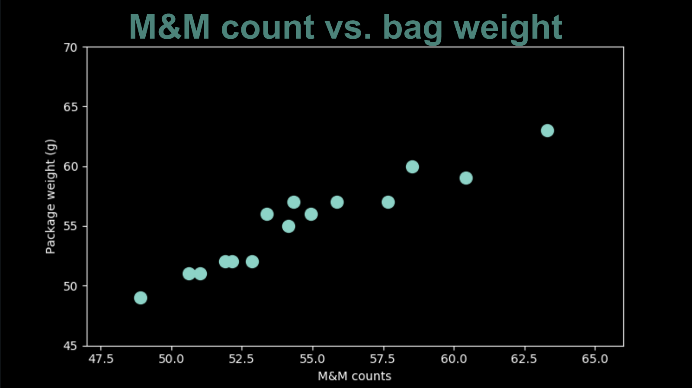
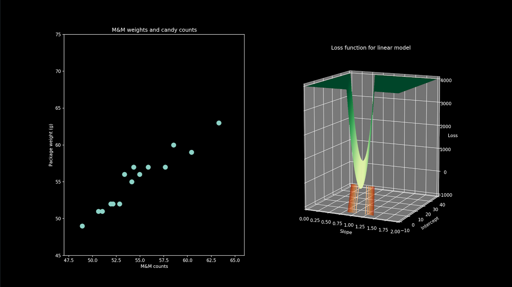

- Part 1: Optimization methods [post] [video]
- Part 2: Optimizing a central tendency model [post] [video] [code]
- Part 3: Optimizing a linear model [post] [video] [code]
- Part 4: Optimizing complex models [post] [video] [code]
- [slides]
In part two, our measure of central tendency for M&M weight was a single parameter model. There was just one number we could adjust to change the result. Just one slider to slide. Just one knob to turn. Let’s take a look at how this works with a two parameter model.
Let’s consider another set of M&M data points. This time around we carefully weighed the bag before opening it and counting the M&Ms inside. We can represent the counts and weights of each bag in a two dimensional plot. This scatterplot shows all the bags we ate.
There is a clear pattern here. Visually you can draw a diagonal line right through the middle of these points. This makes sense when you consider how very uniform in size M&M are (the plain ones, not the peanut ones). If all M&Ms had exactly the same weight (as did all the paper paper packaging) these points would be exactly on the same line. Since there is some variation, that introduces a bit of scatter.
Because this appears so linear, let’s fit a straight line model to it. The equation of a line is "the y value is equal to the x value times the slope plus the y intercept". For this data, x is the M&M count and y is the bag weight. The slope and the intercept are now our two parameters, our two dials that we get to adjust to improve the fit of our model.
For convenience, we will continue to use our squared deviation as our cost function. It just so happens that when fitting a line with a squared deviation cost function there is another very elegant analytic solution for the best parameters, just like there was for the central tendency, when we learned that we could jump straight to it by calculating the mean. However, we will ignore the analytic solution for now so that we can play with two parameter optimization.
We have the luxury once again of being able to do an exhaustive search. This gives us a birds eye view of how the loss function varies across the parameter space. Looking at the loss function, we see that for this particular model and data, it is not so much a bowl as it is a narrow valley that is slightly deeper in the middle. It looks like a bowl that has been squished sideways. The plateau on the top is not actually part of the loss function, it’s just where we chopped it so that we could focus on the valley, which is the most interesting bit. The loss function continues to get higher and steeper the farther it gets away from the bottom of that valley.
We are going to bypass the second obvious solution to this problem and just choose the lowest point out of all of them. We’re going to pretend for now that we don’t know where the lowest point is.
We start by picking an arbitrary point in the parameter space. It corresponds to a single value of the slope and intercept, and there is one particular line that it corresponds to. We can show that together with our data points.
Then, we can adjust one of our dials.We can shift the intercept up and down . Notice that as the line passes through the data points, the loss gets lower, and once the line moves past the data points, the loss climbs again. There’s a point in the middle at which it is quite low, but that is still not quite the lowest value of the loss function across the entire parameter space.
We can change gears and play with the second parameter, the slope. This corresponds to moving in a different direction in the parameter space. In our model, It results in wiggling the line back-and-forth. Again, we see that, depending on the value of the slope, the value the lost function goes up and down, but it never quite reaches the bottom, its lowest possible value.
It’s possible to move both parameters at once. Again we can see that the value of the loss function jumps up and down, tracking the combination of parameter values we have chosen.
At this point, It’s probably clear what needs to happen. Our point in parameter space needs to roll down to the bottom of the bowl, until it finds the deepest part. This is exactly what gradient descent does for us. We can start off away up high and make a step, headed down the hill, with the size of the step being related to the steepness of the slope. This moves us closer to the bottom of the valley, but doesn’t get us there yet, so we repeat it, Stepping down the slope, whichever direction that is, again and again, with the stepsize related to the steepness.
Then finally we're there. We've found the best pair of parameters. The best-fitting offset is 4.2 and the best fitting slope is .915. It's worth noting that the offset in our model is the weight of the paper packaging. It is the weight of a package when the M&M count is zero, where x is zero. The slope is the change in weight when the count increases by one--the weight of a single M&M.
Looking at our linear-fit example, we can start to see how optimization works when used with more complicated models. Click the link below to join me for the fourth and final part of this series where we show how optimization extends to many-parameter models including deep neural networks.
Now that we've seen how to apply optimization to a two-parameter model, let's extend it even further in part 4 to 3-and-higher parameter models.